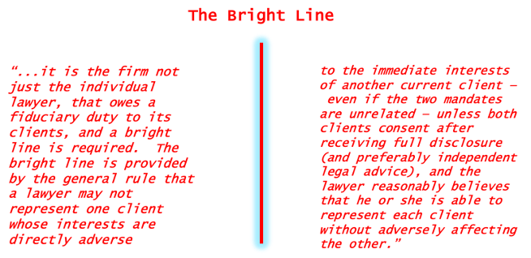

Module 7
This is the second and last of our two week modules and we will be discussing Conflicts and Duties in more detail. Please note that there are three assignments for this Module.
These Scenario Questions are examples of what you may expect to see on the Final Exam.
Module Overview
This is the second and last of our 2-week Modules. In this Module we cover some topics that deal with the proper functioning of the lawyer-client relationship. The framework that we analyze in this Module is designed to **regulate any potential conflicts of interest **between a lawyer and their client. Some of the obligations that we reviewed in previous Modules carry over into the duty of loyalty and conflicts of interest.
They both tie into public policy values like trying to make access legal services effective. The values underlying duty of loyalty and preventing conflicts at all costs sometimes come into conflict with access to justice issues, potentially making access to legal services more difficult in some situations.
Readings
- Code: 3.4; 1.1 [definitions of “conflict of interest” and “consent”]
- Cases:
- MacDonald Estate v Martin, [1990] S.C.J. No. 41
- Ontario v Chartis Insurance Co, 2017 ONCA 59
- Stewart v. Canadian Broadcasting Corp. et al (1997), 150 D.L.R. (4th) 24
- R v Neil 2002 SCC 70
- Strother v 3464920 Canada Inc. 2007 SCC 24
- Canadian National Railway Co. v McKercher LLP, 2013 SCC 39
- Law Society of Saskatchewan v Balon 2016 SKLSS 8
- Law Society of Upper Canada v. George Douglas Hunter, 2007 ONLSHP 0027
7.1: The BC Code and Conflicts of Interest
It is much more difficult to avoid conflicts in today’s world when many lawyers work for large, multi-national firms and change employers throughout their career. A sole practitioner may even find it hard if they are working in a large metropolitan area.
Part of the difficulties in avoiding conflicts relates to lawyers having the same concerns that most other people in modern society have. Lawyers have their own personal interests, sometimes financial interests, that may either align with a client’s interests or stand in opposition to them. Sometimes there might be family interests. Often times lawyers and some clients can develop a friendly or personal relationship that can go well beyond a professional relationship. This can lead on some occasions for outside economic or romantic relationships to develop, which can cause problems.
So we’ll cover some of these issues this week that can pull lawyers in different directions when confronting the potential for a conflict of interest. Conflicts, as you’ll see, has developed into quite a large body of rules, and is featured in quite a bit of SCC case law in recent years.
The issue of conflicts is a large area of concern for the profession and for individual lawyers, it’s not an overstatement to paraphrase Alice Woolley that “no area of the law... causes lawyers more difficulty in their practices than the rules governing conflicts of interest.”
Before we get into the case law, I want to illustrate that point by looking at the BC code and how it deals with conflicts of interest.
Here are the relevant definitions in the Code, first you have “conflict of interest” itself defined:
“conflict of interest” means the existence of a substantial risk that a lawyer’s loyalty to or representation of a client would be materially and adversely affected by the lawyer’s own interest or the lawyer’s duties to another client, a former client, or a third person.
“consent” means fully informed and voluntary consent after disclosure.
In terms of “substantial risk” the risk must be more than a mere possibility; there must be a genuine, serious risk to the duty of loyalty or to client representation arising from the retaining the client. The commentaries say that a client’s interests may be seriously prejudiced unless the lawyer’s judgment and freedom of action on the client’s behalf are as free as possible from conflicts of interest.
“Representation” means acting for a client and includes your advice to the client as well as the judgment on behalf of the client.
S. 3.4 of the BC Code deals directly with Conflicts. It’s a big section.
- Conflicts & Dispute carry over generally to all sub-sections
- Duties to current & former clients
There are 24 subsections with more sub-provisions under those sections. There are some areas that overlap with others such as conflicts & dispute.
I wanted to highlight 2 areas that we’ll focus on more, such as the general duty to avoid conflicts with current clients but also duties to former clients, specifically when acting against them.
3.4 Conflicts
Duty to avoid conflicts of interest
3.4-1 A lawyer must not act or continue to act for a client where there is a conflict of interest, except as permitted under this Code.
Examples: Acting for a client in more than one matter, providing legal advice on commercial transactions to a small business while representing an employee of that business on an employment matter, having direct or indirect financial interest (through family for example) in a client’s affairs, close personal or sexual relationship with client.
So this rule applies throughout the lawyer-client relationship, you have to examine whether a conflict of interest exists not only from the beginning of the relationship but throughout the duration of a retainer, because new circumstances or information may establish or reveal a conflict of interest.
The value of an independent bar is diminished unless the lawyer is free from conflicts of interest. The rule governing conflicts of interest is founded in the duty of loyalty which is grounded in the law governing fiduciaries. The lawyer-client relationship is a fiduciary relationship and as such, the lawyer has a duty of loyalty to the client.
To maintain public confidence in the integrity of the legal profession and the administration of justice, in which lawyers play a key role, it is essential that lawyers respect the duty of loyalty. Arising from the duty of loyalty are other duties, such as a duty to commit to the client’s cause, the duty of confidentiality, the duty of candour and the duty not to act in a conflict of interest. This obligation is premised on an established or ongoing lawyer client relationship in which the client must be assured of the lawyer’s undivided loyalty, free from any material impairment of the lawyer and client relationship.
As the commentaries notes, you will see that the rule reflects the principle articulated in the R. v. Neil and Strother cases, where the SCC outlined the principles regarding conflicting interests involving current clients. The rules outline the principle that a lawyer must not represent one client whose legal interests are directly adverse to the immediate legal interests of another client without consent.
We’ll look at those cases later, but the commentaries for Rule 3.4 do outline some of the factors for you to consider in determining whether a conflict of interest exists:
Factors for the lawyer’s consideration in determining whether a conflict of interest exists include:
- the immediacy of the legal interests;
- whether the legal interests are directly adverse;
- whether the issue is substantive or procedural;
- the temporal relationship between the matters;
- the significance of the issue to the immediate and long-term interests of the clients involved; and
- the clients’ reasonable expectations in retaining the lawyer for the particular matter or representation.
There are some common scenarios outlined as examples:
-
(a) A lawyer acts as an advocate in one matter against a person when the lawyer represents that person on some other matter.
-
(b) A lawyer provides legal advice to a small business on a series of commercial transactions and at the same time provides legal advice to an employee of the business on an employment matter, thereby acting for clients whose legal interests are directly adverse.
-
(c) A lawyer, an associate, a law partner or a family member has a personal financial interest in a client’s affairs or in a matter in which the lawyer is requested to act for a client, such as a partnership interest in some joint business venture with a client.
-
(d) A lawyer has a sexual or close personal relationship with a client.
Other situations include:
- A lawyer or his or her law firm acts for a public or private corporation and the lawyer serves as a director of the corporation, and
- Sole practitioners who practise with other lawyers in cost-sharing or other arrangements represent clients on opposite sides of a dispute.
here is the separate Provision for CONSENT under Rule 3.4: CONFLICTS:
s. 3.4-2
Consent
3.4-2 A lawyer must not represent a client in a matter when there is a conflict of interest unless there is express or implied consent from ALL clients and the lawyer reasonably believes that he or she is able to represent each client without having a material adverse effect upon the representation of or loyalty to the other client.
(a) Express consent must be fully informed and voluntary after disclosure.
(b) Consent may be inferred and need not be in writing where all of the following apply:
- Client is government, financial institution, entity publicly traded or with in-house counsel;
- Matters are unrelated;
- Lawyer has no relevant confidential information from one client that might reasonably affect other; and
- The client has commonly consented to lawyers acting for and against it in unrelated matters
[1] Disclosure is an essential requirement to obtaining a client’s consent. Where it is not possible to provide the client with adequate disclosure because of the confidentiality of the information of another client, the lawyer must decline to act.
[2] The lawyer should inform the client of the relevant circumstances and the reasonably foreseeable ways that the conflict of interest could adversely affect the client’s interests. This would include the lawyer’s relations to the parties and any interest in or connection with the matter.
[3] Following the required disclosure, the client can decide whether to give consent.
IN TERMS OF INFERRED OR IMPLIED CONSENT, remember that IT APPLIES ONLY IN EXCEPTIONAL CASES, INVOLVING “SOPHISTICATED CONSUMERS OF LEGAL SERVICES”, that list on inferred consent is actually fairly exhaustive: Governments or Banks or large Corporations with in-house counsel are all considered sophisticated entities for the purposes of inferred consent.
Conflicts: Duties to Former Clients
3.4-10
Acting against former clients
Unless the former client consents, a lawyer must not act against a former client in:
-
(a) the same matter,
-
(b) any related matter, or
-
(c) any other matter, if the lawyer has relevant confidential information arising from the representation of the former client that may reasonably affect the former client.
The general prohibition and permitted activity in the previous rule relating to conflicts apply to former clients as well. You are prohibited from acting against a former client in the same or related matter unless they consent. You are also prohibited in many instances from acting against them in other matters if you obtained relevant confidential information while representing them and it might affect the former client.
Basically this rule prevents you from attacking legal work done during the retainer, or from undermining the client’s position on a matter that was central to the retainer.
You are permitted however to act against a former client in a case unrelated to any work you’ve previously done for them. Any confidential information you previously obtained while representing that client would must be irrelevant to the new case.
Rule 3.4-11 discusses exceptional situations where another lawyer in a firm acts against a client that another in the firm previously represented. When the former client doesn’t consent, this is only allowed where taken reasonable measures to ensure that there will be no disclosure of the former client’s confidential information by the transferring lawyer to the new firm lawyer. You should also consider the extent the prejudice and the good faith of the parties.
3.4-11
When a lawyer has acted for a former client and obtained confidential information relevant to a new matter, another lawyer in the lawyer’s firm may act against the former client in the new matter, if the firm establishes, in accordance with rule 3.4-20, that it is reasonable that it act in the new matter, having regard to all relevant circumstances, including:
-
(a) the adequacy and timing of the measures taken to ensure that no disclosure of the former client’s confidential information to the partner or associate having carriage of the new matter will occur;
-
(b) the extent of prejudice to any party; and
-
(c) the good faith of the parties.
The commentaries to rule 3.4-20 provide guidelines regarding lawyer transfers between firms. For these types of situations when working in firms they provide valuable guidance for the protection of confidential information. These are described as rare cases in which, having regard to all of the relevant circumstances, it is appropriate for the lawyer’s partner or associate to act against the former client.
You should take a moment to become familiar with them.
These guidelines also apply with modifications to situations in which non-lawyer staff leave one law firm to work for another and a determination is made, before hiring the individual, on whether any conflicts of interest will be created and whether the potential new hire actually possesses relevant confidential information.
Guidelines: How to screen / measures to be taken
- The screened lawyer should have no involvement in the new law firm’s representation of its client in the matter.
- The screened lawyer should not discuss the current matter or any information relating to the representation of the former client (the two may be identical) with anyone else in the new law firm.
- No member of the new law firm should discuss the current matter or the previous representation with the screened lawyer.
- The firm should take steps to preclude the screened lawyer from having access to any part of the file.
- The measures taken by the new law firm to screen the transferring lawyer should be stated in a written policy
- The new law firm should document the measures taken to screen the transferring lawyer, the time when these measures were put in place (the sooner the better), and should advise all affected lawyers and support staff of the measures taken.
7.2: Duty of Loyalty: Former Clients
There are three cases here that illustrate the duty of loyalty as it pertains to conflicts of interest and former clients.
In the area of conflicts of interest, a landmark case in Canada was decided approximately 30 years ago in MacDonald Estate v Martin. It is often referred to as a classic “transferring lawyer” case where there is a conflict between the duty of a transferring lawyer to their former client vs the duties of the new lawyer to the transferred client. The decision is a "classic" case of a divided Supreme Court of Canada seemingly struggling to achieve consensus. Although there were no dissents, there were two different concurring opinions by 4 and 3 justices, respectively, that differed in how the Court reached its decision.
The Ontario Court of Appeal decision in Chartis illustrates the difficulty of applying the the test from McDonald Estate in certain types of practical working situations that lawyers find themselves engaged in.
In this case Martin was the appellant but also a Plaintiff in an estate lawsuit related to the MacDonald estate. In 1983 Martin hired AK Twaddle as his lawyer. Twaddle was assisted by his articling student (and later junior lawyer of the Twaddle Law firm) Kristin Dangerfield. Dangerfield was actively engaged in the case and was privy to many confidences disclosed by the appellant to Twaddle. Dangerfield was in attendance at numerous meetings between Twaddle and Martin. She assisted in the preparation of many documents, prepared and attended examinations for discovery and was present when a settlement was discussed by the parties.
After the Twaddle law firm dissolved Dangerfield joined a firm in 1987 which eventually became the Thompson Dorfman Sweatman firm. The Thompson firm represented the Defendant in the Estate lawsuit that Martin had commenced. That litigation was continuing when Dangerfield joined the Thompson firm.
She was not assigned to the case and not in any way involved in representing the Defendant. Both Dangerfield and senior lawyers of the Thompson firm swore affidavits that the case had not been discussed with Dangerfield since she joined the firm and would not be discussed with her. The application at lower courts to remove the Thompson firm was dismissed and Martin appealed to the Supreme Court of Canada.
MacDonald Estate v. Martin, 1990 CanLII 32 (SCC)
The main issue before the Supreme Court is concisely defined: What is the appropriate standard to be applied in determining whether the Thompson firm is disqualified from continuing to act in this litigation by reason of conflict of interest?
The main considerations here relating to ethics and conflicts of interest involve competing values. Soyinka J identifies several competing values in the decision:
- The value of maintaining high standards of the legal profession and the integrity of the Canadian justice system;
- The countervailing value that a litigant should not be deprived of their choice of counsel without good cause; and
- The value of permitting reasonable mobility in the legal profession.
A disqualifying conflict of interest may be based on either the possibility or probability of “real mischief”, mischief being defined as the mis-use of confidential information by a lawyer against a former client. The court majority noted that recent trends in conflict laws point towards a strict test in favour of ensuring not only that there is no actual conflict but that there must be no appearance of conflict.
The appropriate test here required two questions to be answered:
- Did the lawyer receive confidential information attributable to a solicitor and client relationship relevant to the matter at hand?
- In this case it was acknowledged that Dangerfield actively worked on the very case in respect of which her new firm is acting against her former client. She was therefore in possession of relevant confidential information.
- Is there a risk that it will be used to the prejudice of the client? For this question the court indicated that there is a a strong inference that lawyers who work together share confidences, unless satisfied that all reasonable measures have been taken to ensure that no disclosure will occur by the "tainted" lawyer to the member or members of the firm who are engaged against the former client. Such reasonable measures would include institutional mechanisms such as Chinese Walls and cones of silence.
- In this case, there was nothing beyond the sworn statements of Dangerfield and co-counsel that no discussions of the case occurred and the undertaking that none would occur. In Sopinka’s opinion, this was not sufficient to demonstrate that all reasonable measures have been taken to rebut the strong inference of disclosure. Therefore Martin’s appeal was allowed and a conflict of interest was found.
Read Cory J’s concurring opinion, which contains a a strong criticism of how the majority reached it’s decision. They would impose a much stricter test. It seems that the key point Cory J takes issue with is the majority’s statement that it is unreasonable to expect lawyers in same firm to not, in the era of mega mergers and huge law firms, be on different sides at different times in representing clients. Justice Cory disagreed and said this reality still cannot be allowed to affect the public’s confidence in the judicial system.
Following the MacDonald Estate case, law societies in Canada gradually established sophisticated ways to screen clients and also assess lawyer’s previous work experience in relation to past clients. The reason that Law Societies did this was to minimize the risk that confidential information obtained by a client’s former lawyer would be made known to lawyer representing the client’s opponent.
But Law Societies also wanted to enable the former lawyer to join the new oppositional law firm. These are the parts of** BC Code** rules that we covered in Rule 3.4 in BC and they cover sub rules 17 to 23 of 3.4
Take a moment to reflect and consider whether you think these rules resolve the issues from that case. Could the Code possibly cover every type of situation encountered in this area of conflicts?
The Chartis case illustrates how Codes and Rules cannot anticipate or solve every situation. In particular there is the question of whether, in some circumstances, the assumption of shared information cannot be rebuttable no matter what steps the lawyers or firm take to prevent that sharing. While you are reviewing the Chartis case, consider some of these issues:
- Interplay between roles of both courts and law society on conflicts questions
- Do the Code rules solve the problem?
- Does the standard established in Chartis bring Canada closer to Justice Cory’s vision in MacDonald Estate?
Ontario v. Chartis Insurance Company of Canada, 2017 ONCA 59
Chartis concerns the disqualification of counsel because of conflict of interest. There was no suggestion of actual impropriety but there was an issue of information being transferred between lawyers due to their close relationship and after one of the lawyers transferred to another firm. Very briefly, the facts involved an entity called “TG” acting as counsel for Government of Ontario in insurance coverage matters.
Read the factual review in the decision and consider the following issue: Was there inadvertent disclosure of confidential information arising from the close working relationship between two lawyers after one transferred law firms to work with the other?
To answer this question the Court used the test formulated in MacDonald Estate:
- The test must be such that the public represented by the reasonably informed person would be satisfied that no use of confidential information would occur.
It is conceded that the lawyer, Foulds, was in possession of confidential information relevant to the client. In assessing risk of prejudice to the client, the court presumed that Foulds would impart confidential information to his new colleagues at LBM. However, the court noted that, as outlined in MacDonald Estate, that inference is rebuttable. In this case there were several safeguards put in place before Foulds arrival at TG, which the court noted in its decision. However there was still an open question as to whether these safeguards were sufficient or “reasonable” in the circumstances.
Although Foulds clearly had confidential information about Ontario, the case turned on the risk that Foulds' knowledge might be used to the prejudice of the Ontario government. The court said that the test is objective:
- A reasonable person must be satisfied that no confidential information would be transferred by the tainted lawyer.
Because of the inference that lawyers who work together share confidences, all reasonable measures must therefore be taken to ensure that no disclosure will ever occur by the tainted lawyer. Whether there was enough evidence that all reasonable measures had been taken was the key issue in this case.
It is on this point that the Court discussed applicable guidelines and recommendations under the Code, but noted that the guidelines could not possibly consider every instance. The Code is not exhaustive and does not reverse the onus of proof on the lawyer to prove that a conflict does not exist. More significantly, it does not rebut the assumption of shared confidences between close-working colleagues.
In this case the integrated nature of the working relationship between the lawyers meant that the potential for inadvertent disclosure was too great. As a result, LBM was disqualified from continuing to represent AIG on the Action. While the “ethical screen” had been implemented according to the Law Society of Upper Canada Code guidelines, compliance with the “spirit of the guidelines” was lacking.
The court ultimately held the integrity of the legal profession and the administration of justice are more important concerns than either a client's choice of counsel or lawyer mobility.
Key Takeaways from Chartis: Court essentially stated that Litigators must abide by the spirit of the ethical screen, and not just adhere to the letter of recommended guidelines of their law society. Technical compliance with guidelines may not be enough to prevent a conflict. In a larger firm, it may be easy to fully abide by the bounds of an ethical screen. However, in a close working relationship, the tainted lawyer may find it more and more difficult to avoid improper and inadvertent disclosure. Litigators must be aware that the administration of justice has sway above all else, including a client's right to choose their own lawyer. In some conflicts there may be no option, absent consent, but to turn down the retainer or remove oneself from the case.
The Duty of Loyalty to former clients is explored in the Stewart case that we previously reviewed under lawyer's ethical responsibilities regarding public communications. Stewart is a case that involves both conflicts and confidentiality issues.
As you recall the facts of this case involved the defendant hiring prominent criminal defence lawyer Edward Greenspan QC for an unsuccessful appeal of his conviction in 1981. Almost 10 years later, in November 1991, CBC televised a reenactment of the crime and the subsequent trial using Greenspan as the host and narrator. The program was created by CBC and a company known as “Scales of Justice Enterprises” of which Greenspan had been one of the incorporators. Greenspan was also one of the creative minds behind the “Scales of Justice” program that aired the reenactment on CBC as “Regina v Stewart.” The broadcast of the program brought renewed attention to the case.
By 1991 Stewart, who had been released from prison since 1982, thought he had put his past behind him so after the broadcast he brought litigation against Greenspan, CBC seeking damages from the network for airing the program.
Stewart v. Canadian Broadcasting Corp., 1997 CanLII 12318 (ON CTGD)
For our purposes here, the issues were:
- Did Mr. Greenspan owe a duty of loyalty to his former client Mr. Stewart?
- If yes, did he breach this duty?
The court held that the duty of loyalty that Mr. Greenspan owed Mr. Stewart was alive but inoperative through the years that they were independent of one another.
Mr. Greenspan, however, brought himself back within the framework of that duty when he chose to involve himself in public aspects of Mr. Stewart’s case yet again. Thus Mr. Greenspan had an operative duty of loyalty and breached it. The trial judge made several very important points which emphasized the positive obligation of a duty of loyalty rather than the negative prohibition on conflicts of interest:
- Lawyer-client fiduciary relationship exists beyond duration of retainer
- The fiduciary relationship imposes a positive obligation & duty of loyalty
- Loyalty arises out of client vulnerability and dependency on lawyer
- It is a freestanding obligation not dependent on confidentiality
- While freedom of expression and coverage of judicial process is of fundamental importance and essential to a democratic society and crucial to the rule of law so is the duty of loyalty that a Lawyer owes to their client. The public needs to have faith in lawyers and legal institutions.
Greenspan owed a duty of loyalty to Stewart, and he breached it, favouring his own financial interests and self-promotion over Stewart’s interest. The manner in which Greenspan publicized his former client’s case undercut the benefits and protections Greenspan had provided as counsel.
The key takeaway from this case is that a lawyer has the discretion to publicize information in the public domain respecting the case of a former client, barring contractual constraint upon such conduct; however this does not relieve counsel of their fiduciary duty of loyalty to their former client.
Module 7 - Scenario: Dealing with Conflicts & Former Clients
Please answer one of the following scenarios with reference to the appropriate Code sections and caselaw:
Scenario 1
You are a real estate lawyer and you are assisting a client with the sale of a house when the financing fell through. You were retained solely for the purpose of this specific transaction. You find this information particularly interesting as there had been a bidding war on the property and you are aware that your niece had also bid on the same property. You are contemplating advising your niece that the property will shortly become available again. What are your ethical obligations?
Scenario 2
You currently work as counsel representing Health Canada. Prior to working for Health Canada you were counsel for Moderna, one of the manufacturers and distributors of a COVID-19 vaccination that is being released this Fall. You are aware that Health Canada sought production orders on Moderna and was informed that the records sought do not exist. You know as a result of your previous employment, that they do exist and that those records will have far-reaching consequences. What are your ethical obligations here?
7.3: Duty of Loyalty: Current Clients
In Topics 3 & 4, we focus on the duty of loyalty for issues that involve conflicts of interest relating to ongoing clients. There are three aspects to the Duty of Loyalty here:
- avoiding a conflict of interest;
- duty of commitment to the client’s cause, and;
- a duty of candour.
You will see these factors involved to some degree in all of the cases we examine for these topics. Keep in mind that the “Bright Line” rule we examine involves:
- an existing client of a lawyer with an unrelated matter and whether that lawyer accepting a new client will cross that “bright line” and create a conflict.
Neil is a landmark SCC decision on conflict of interest relating to lawyers and clients. The Supreme Court of Canada held that there is fiduciary duty that both firms and lawyers owe towards their client. A lawyer or law firm cannot represent a client whose interests may be in opposition to the interests of another client without consent and a reasonable belief that the client’s interests will be adversely affected.
R. v. Neil, 2002 SCC 70
An overview of the facts of Neil are useful to understand the ruling. Following complaints that the accused paralegal (Neil) was providing legal advice contrary to the Alberta Legal Profession Act, he sought representation from Venkatraman Law Firm for two criminal charges that ultimately brought the case to the Supreme Court of Canada.
First Indictment: “Canada Trust” matter
Second Indictment: The “Doblanko” matter
The accused, Neil, argued that the law firm, with which he had a solicitor‐client relationship, was in a conflict of interest. He claimed that his lawyer had failed to represent him and had ‘sold him out’ to the interests of another client of the firm. Thus, asserting that charges should be stayed because of his lawyers actions.
There were several issues here considered by the court:
- Was there a duty of loyalty owed by the law firm to the appellant?
- Did the law firm breach their duty of loyalty to the appellant?
- What are the proper limits of a lawyer’s “duty of loyalty” to a current client in a case where the lawyer did not receive any confidential information that was (or is) relevant to the matter in which she/he proposes to act against the current client’s interest?
At paragraph 19 of the decision the court analyzed the three components of the duty of loyalty relevant to this case: duty to avoid conflicting interests, duty of commitment to a client’s cause, and duty of candour. The analysis reveals at paragraph 29 that that it is the firm, not just the individual, that owes a fiduciary duty to its clients: a bright line is required.
The breaches of the Duty of Loyalty in this case included two conflicts:
- First conflict: Attempt to act simultaneously for both the appellant (Neil) and eventual co-accused (Lambert) in the Canada Trust Charges
- Second conflict: Accepting retainer (Doblanko) that required firm to produce evidence disfavorable to the current client (Neil)
The remedies for a breach of the duty of loyalty included:
- Submitting a complaint to the relevant governing body, The Law Society of Alberta, that may result in disciplinary action;
- Seeking compensation for conflict of interest
- Constitutional remedy for breach of ethical rules could be sought but not always justified
At paragraph 43, Binnie J. ultimately declined to enter a judicial stay of proceedings: “There is nothing in the Doblanko verdict to contravene our fundamental notions of justice.”
Key takeaways from the Neil decision include:
- The court’s comments, at paragraph 3, that a law firm, as fiduciary, cannot serve two masters at the same time
- It is the firm not just the individual lawyer, that owes a fiduciary duty to its clients, and a bright line is required.
The bright line is provided by the general rule that,
- a lawyer may not represent one client whose interests are directly adverse to the immediate interests of another current client,
- even if the two mandates are unrelated,
- unless both clients consent after receiving full disclosure (and preferably independent legal advice), and
- the lawyer reasonably believes that he or she is able to represent each client without adversely affecting the other.
Summary of the Bright line rule:
an objective rule that resolves a legal issue in a straightforward, predictable manner. The bright-line rule is supposed to be easy to administer and produces clear, certain, though, arguably, not always equitable results.

Strother v. 3464920 Canada Inc., 2007 SCC 24